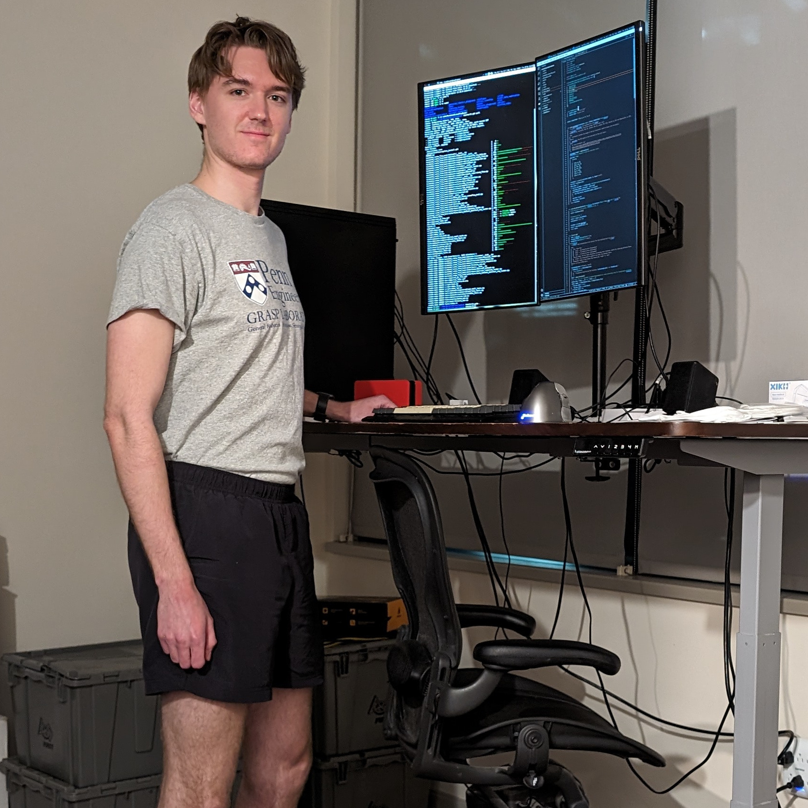

I’m Kyle Vedder

Research Interests
I believe strongly in The
Bitter Lesson, and I believe our job as researchers is to find the
right tricks, data distributions, and algorithms to scale up deep
learning.
I believe one such trick is teaching vision systems to understand
motion. My PhD research has focused on training self-supervised models
to predict motion via scene flow, and building offline preprocessing
pipelines to provide these motion descriptions without labels.
Academic Background
I am a CS PhD candidate at
Penn under Eric Eaton
and Dinesh Jayaraman
in the GRASP Lab.
Representative projects include:
- ZeroFlow: Scalable Scene Flow via
Distillation
- Distill an expensive optimization method into a feed-forward network
and data scale it to state-of-the-art performance
- I Can’t Believe It’s Not Scene
Flow!
- Standard benchmarks were systematically broken, hiding the failure
of all methods to describe small object motion; we proposed a new metric
and a simple baseline that was state-of-the-art
- Argoverse 2 2024 Scene
Flow Challenge
- Hosted a challenge to push the field to close the gap between prior
art and a qualitative notion of reasonable flow quality
- Neural Eulerian Scene Flow Fields
- Fit a neural network-based scene flow volume to the entire
observation and optimize it against multi-frame objectives and out pops
amazing performance and emergent behaviors like point tracking.
For a narrative overview of how my PhD research fits together, see Overview of my PhD
Research.
Industry / Engineering
Background
I have done many industry internships:
- NVIDIA as a research intern under Zhiding Yu
- ArgoAI as a research intern under James Hays
- Amazon Lab126 as a perception intern on their home robot, Astro
- Google as a software engineering intern on adwords and ads
quality
- Unidesk (a startup since aquired by Citrix)
I also have significant experience doing high-precision full stack
robotics. In undergrad, I lead the greenfield development of AMRL’s Robocup Small Size
League control stack and did research in multi-agent path planning.
Updates
- Jul 1st, 2024: I Can’t Believe It’s
Not Scene Flow! was accepted to ECCV! (Reviews)
- Mar 28th, 2024: Blog
post: On Homogeneous Transforms
- Jan 29th, 2024: Joined Nvidia as a Research Intern!
- Jan 16th, 2024: ZeroFlow: Scalable
Scene Flow via Distillation was accepted to ICLR 2024! (Reviews)
- Dec 4th, 2023: Book
review: Eric Jang’s book “AI is Good for You”
- Aug 3rd, 2023: Blog post:
Applying to CS PhD programs for Machine Learning: what I wish I
knew
- Jul 3rd, 2023: Blog post: My ML
research development environment workflow
- Jun 18th, 2023: ZeroFlow was selected
as a highlighted method in the CVPR 2023 Workshop on Autonomous
Driving Scene Flow Challenge!
- Jan 12th, 2023: A
Domain-Agnostic Approach for Characterization of Lifelong Learning
Systems was accepted to Neural Networks.
- Jun 30th, 2022: Sparse
PointPillars was accepted to IROS 2022. (Reviews)
- Jun 7th, 2022: Invited talk for
Sparse PointPillars at 3D-DLAD
- May 15th, 2022: Joined Argo as a Research Intern!
- Apr 27th, 2021: Passed my WPEII qual on Current Approaches and
Future Directions for Point Cloud Object Detection in Intelligent
Agents (Document) (Video)
- Feb 11th, 2021: Blog post: Setting up
mujoco-py for use with on-screen and off-screen
rendering
- Nov 4th, 2020: X*: Anytime Multi-Agent
Path Finding for Sparse Domains using Window-Based Iterative
Repairs was accepted to Artificial Intelligence Journal!
- Jul 23rd, 2020: Presentation:
From Shapley Values to Explainable AI
- Jun 29rd, 2020: Demo: Penn
Service Robots navigating around Levine
- May 8th, 2020: Term
paper: An Overview of SHAP-based Feature Importance Measures and
Their Applications To Classification
{kind=link}